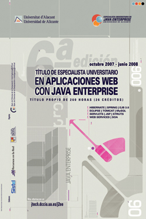

Especialista Universitario en Java Enterprise - Sexta Edición
Por sexto año consecutivo presentamos el Título de Especialista Universitario en Aplicaciones y Servicios Web con Java Enterprise. Se trata de un título de postgrado de 260 horas organizado por el Departamento de Ciencia de la Computación e Inteligencia Artificial (DCCIA) de la Universidad de Alicante impartido de Octubre de 2007 a Junio de 2008.
La experiencia de estos años nos permite ofrecer una formación de calidad, con claros objetivos y con contenidos bien definidos orientados a hacer de ti un experto profesional informático en el campo de Java Enterprise.
La metodología del Especialista será fundamentalmente práctica y basada en el desarrollo incremental de distintos proyectos de aplicación. El número reducido de estudiantes nos permite una formación muy personalizada orientada a convertirte en un excelente profesional y experto en tu campo. Te prepararemos para afrontar complejos proyectos informáticos, seleccionar las tecnologías adecuadas para cada uno de sus componentes, diseñar la arquitectura de las soluciones propuestas y establecer una metodología de trabajo para su desarrollo.
Desde el Título de Especialista organizamos también otras actividades destinadas a divulgar las tecnologías Java, como jornadas de divulgación (I Jornada de Tecnologías Java y II Jornada de Tecnologías Java) o cursos específicos para estudiantes universitarios y para empresas.
Te invitamos a que visites los contenidos del Especialista y del resto de enlaces. Cualquier consulta sobre el Título de Especialista o sobre el resto de contenidos de esta web la puedes dirigir a Domingo Gallardo, director del Especialista, o a los profesores que imparten el Título (consultar su e-mail en la sección profesorado). Gracias por visitarnos.